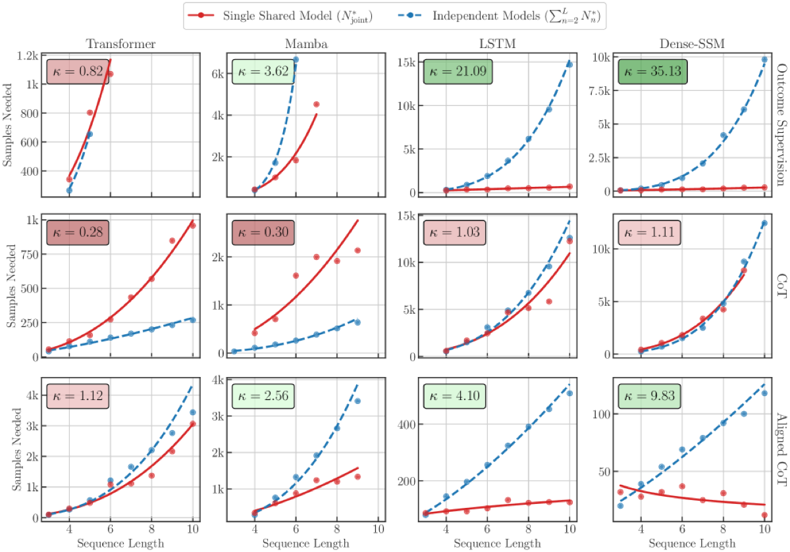

Why it matters왜 중요한가
The real cost of a transformer's weak state tracking isn't only failing on longer sequences — it's needing a mountain of data even for lengths it has already seen.
트랜스포머의 약한 상태추적이 치르는 진짜 비용은 "더 긴 시퀀스에서의 실패"만이 아니다 — 이미 본 길이에서조차 산더미 같은 데이터를 요구한다는 점이다.
Prior work blamed transformer state-tracking limits on out-of-distribution length extrapolation. The authors argue that in practice OOD may not matter if you have enough data — so the sharper question is how much data is "enough". By measuring the minimal sample size N* to reliably learn modular-addition (commutative) and S5 permutation (non-commutative) tasks, they find transformers' data appetite explodes with sequence length, while single-layer RNNs stay flat. The proposed explanation — an "induction bias" that encourages step-by-step state updates and weight sharing across lengths — gives a mechanistic story for why recurrent and dense-SSM models are far more data-efficient at state tracking, and even hints at why long-context transformers suffer "context rot".
기존 연구는 트랜스포머의 상태추적 한계를 분포 밖 길이 외삽 탓으로 돌렸다. 저자들은 데이터만 충분하면 OOD는 실무에서 문제가 안 될 수 있다고 보고, 더 날카로운 질문을 던진다 — "충분한" 데이터는 얼마인가. 모듈러 덧셈(교환)과 S5 순열(비교환) 과제를 신뢰성 있게 학습하는 데 필요한 최소 샘플 수 N*를 측정한 결과, 트랜스포머의 데이터 요구량은 시퀀스 길이에 따라 폭증하지만 단층 RNN은 평탄하게 유지된다. 제안된 설명인 "귀납 편향"(단계별 상태 갱신과 길이 간 가중치 공유를 유도)은 순환·dense-SSM 모델이 상태추적에서 왜 훨씬 데이터 효율적인지에 대한 메커니즘적 서사를 제공하며, 장문맥 트랜스포머가 겪는 "context rot"의 단서도 준다.

By the numbers핵심 숫자
(Dense-SSM, outcome, m=5)최대 공유계수 κ
(Dense-SSM, outcome, m=5)
(Transformer + CoT, m=5)최소 κ — 파괴적 간섭
(Transformer + CoT, m=5)
Transformer at m=5, L=20N* 격차: LSTM ACoT vs
Transformer (m=5, L=20)
(same task, m=5, L=20)트랜스포머 N*: CoT vs ACoT
(동일 과제, m=5, L=20)
(excl. development)총 학습 실행 수
(개발용 제외)
budget per run실행당 최적화
스텝 예산
Results — N* explodes for transformers, stays flat for RNNs결과 — N*가 트랜스포머는 폭증, RNN은 평탄
| Length L | 5 | 10 | 20 | 30 |
|---|---|---|---|---|
| Transformer · CoT | 10 | 16 | 19 | 20 |
| LSTM · ACoT | 4 | 6 | 2 | 2 |
Parity is easy for both, but note the trend: the LSTM needs fewer samples as sequences get longer (2 at L=20/30), because longer sequences pack more aligned supervision into one example. For harder moduli the gap blows open — at m=5, L=20 the transformer needs 1.7K (CoT) and a single-layer LSTM with ACoT learns parity from as few as 2 samples.
패리티는 둘 다 쉽지만 추세를 보라: LSTM은 시퀀스가 길어질수록 더 적은 샘플을 요구한다(L=20/30에서 2). 긴 시퀀스가 한 예제 안에 더 많은 정렬 supervision을 담기 때문이다. 더 어려운 모듈러스에서는 격차가 벌어진다 — m=5, L=20에서 트랜스포머는 1.7K(CoT), 단층 LSTM은 ACoT로 단 2 샘플에서 패리티를 학습한다.
In one diagram한 장의 그림
Idea: state tracking is a weight-sharing problem아이디어: 상태추적은 곧 가중치 공유 문제
Sharing Factor κ
Define κ = (Σ N*_n) / N*_joint: the cost of training one model on all lengths vs. summing independent per-length models. κ > 1 = mechanism sharing (data spent on length 5 also helps length 30); κ ≈ 1 = length-specific solutions; κ < 1 = destructive interference, where mixing lengths is worse than training each alone.
κ = (Σ N*_n) / N*_joint로 정의: 모든 길이를 한 모델로 학습한 비용 대 길이별 독립 모델의 합. κ > 1 = 메커니즘 공유(길이 5에 쓴 데이터가 길이 30에도 기여); κ ≈ 1 = 길이별 전용 해법; κ < 1 = 파괴적 간섭, 길이를 섞는 게 따로 학습보다 나쁨.
Outcome / CoT / ACoT
Three label formats expose different amounts of process signal. Outcome gives only the final answer; CoT appends partial sums autoregressively after the input; ACoT emits each partial sum aligned to its input token — matching an RNN's hidden-state evolution. Transformers love CoT (self-attention to own outputs); RNNs love ACoT (per-step alignment) and choke on CoT (recall bottleneck).
세 라벨 형식이 서로 다른 양의 과정 신호를 노출한다. Outcome는 최종 답만; CoT는 입력 뒤에 부분합을 자기회귀로 덧붙임; ACoT는 각 부분합을 해당 입력 토큰에 정렬해 출력 — RNN의 은닉 상태 진화와 일치. 트랜스포머는 CoT를 선호(자기 출력에 어텐션), RNN은 ACoT를 선호(스텝별 정렬)하고 CoT에서는 막힌다(recall 병목).
How it works어떻게 작동하나
- Pick canonical state-tracking tasks표준 상태추적 과제 선택Modular addition mod m (commutative, cyclic group) as the main task; S5 permutation composition (non-commutative) in the appendix to ground the claims beyond commutative operations.모듈러 덧셈 mod m(교환·순환군)을 주 과제로; S5 순열 합성(비교환)을 부록에 두어 교환 연산 너머로 주장을 일반화.
- Measure N* by binary–geometric search이진–기하 탐색으로 N* 측정For each (m, L, format, length-distribution, model), search the minimal dataset size where some config among 3 LRs × 5 seeds drives validation loss below ϵ = 10⁻⁴ (or hits perfect accuracy).각 (m, L, 형식, 길이분포, 모델)마다 3 LR × 5 시드 중 한 설정이 검증 손실을 ϵ = 10⁻⁴ 아래로(또는 완벽 정확도) 내리는 최소 데이터 크기를 탐색.
- Compare four architectures네 아키텍처 비교6-layer GPT-2 transformer (d=256), single-layer LSTM (d=768), single-layer Dense-SSM / bilinear RNN h_t = A_{x_t} h_{t-1} (d=256), plus Mamba (6-layer) for the sharing analysis.6층 GPT-2 트랜스포머(d=256), 단층 LSTM(d=768), 단층 Dense-SSM / bilinear RNN h_t = A_{x_t} h_{t-1}(d=256), 공유 분석엔 Mamba(6층) 추가.
- Compute κ and correlate with OODκ 계산 후 OOD와 상관Compare joint vs. per-length N* to get κ, then check Table 2: high κ tracks strong length generalization at 2× training length — in-distribution sharing and OOD generalization are the same coin.joint 대 길이별 N*로 κ를 구한 뒤 Table 2 확인: 높은 κ는 학습 길이 2배에서의 강한 길이 일반화와 일치 — 분포 안 공유와 OOD 일반화는 동전의 양면.
What to take away그래서, 가져갈 것
Transformer state tracking is a data problem, not just a length problem. Even in-distribution, sample needs scale steeply with length — a concrete cost behind "context rot" in long-context models.
트랜스포머 상태추적은 길이 문제만이 아니라 데이터 문제다. 분포 안에서도 샘플 요구가 길이에 가파르게 증가 — 장문맥 모델의 "context rot" 뒤에 있는 구체적 비용.
Recurrence buys weight sharing for free. The same step-update fires at every position, so RNNs/SSMs amortize learning across lengths (κ up to 35×) — a structural advantage attention lacks.
순환은 가중치 공유를 공짜로 준다. 같은 단계 갱신이 모든 위치에서 발화하므로 RNN/SSM은 길이 전반에 학습을 분산한다(κ 최대 35배) — 어텐션엔 없는 구조적 이점.
Match supervision to architecture. Use CoT for transformers, aligned-CoT for recurrent models. The wrong format can cost 1000× more data on the identical task.
supervision을 아키텍처에 맞춰라. 트랜스포머엔 CoT, 순환 모델엔 aligned-CoT. 형식을 잘못 고르면 같은 과제에 1000배의 데이터가 든다.
κ predicts OOD generalization. A cheap in-distribution metric (sharing factor) forecasts length extrapolation — a useful design signal for hybrid attention-SSM architectures.
κ가 OOD 일반화를 예측한다. 값싼 분포 안 지표(공유계수)가 길이 외삽을 예고 — 어텐션-SSM 하이브리드 설계에 유용한 신호.